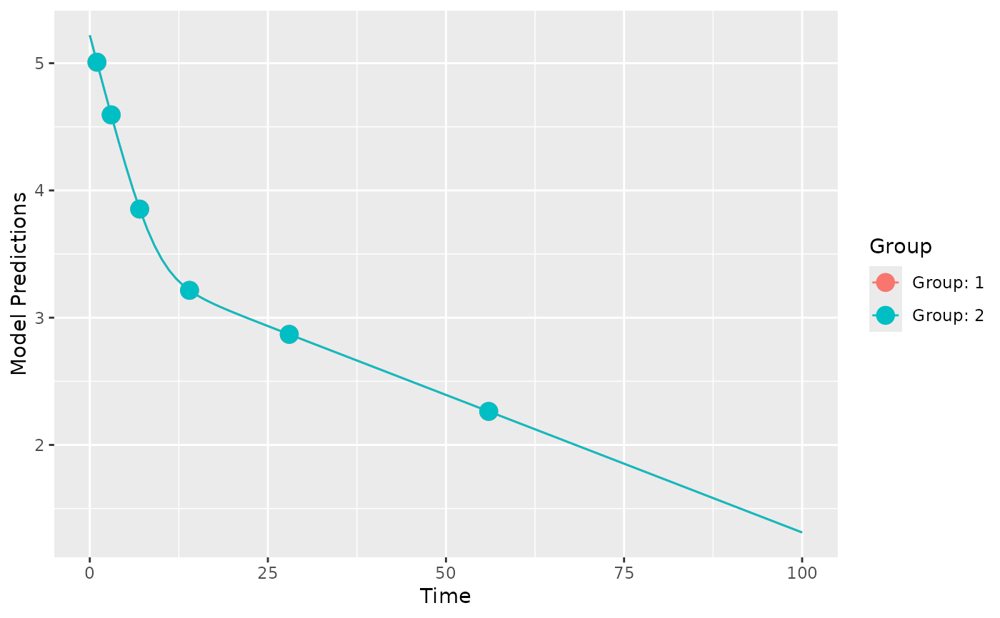
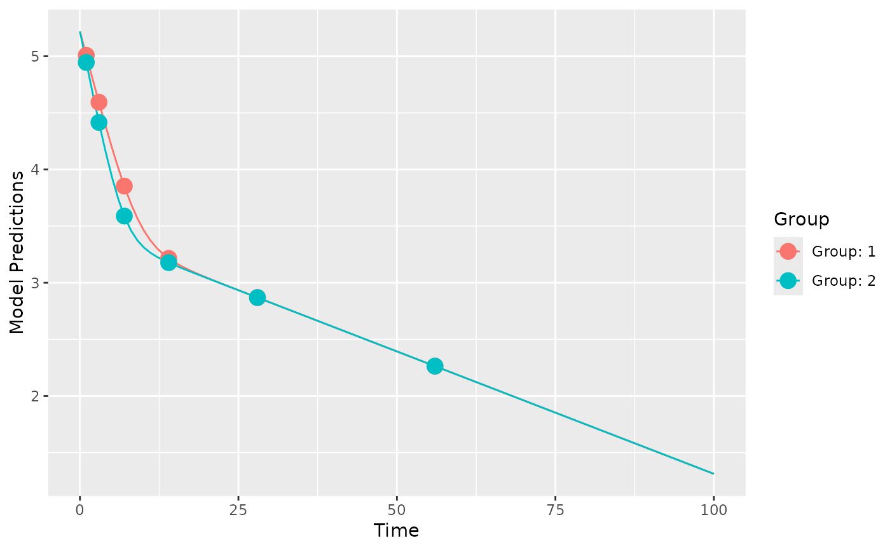

Evaluate the power of a design to estimate a parameter value different than some assumed value (often the assumed value is zero). The power is calculated using the linear Wald test and the the design is defined in a poped database.
Usage
evaluate_power(
poped.db,
bpop_idx,
h0 = 0,
alpha = 0.05,
power = 0.8,
twoSided = TRUE,
find_min_n = TRUE,
fim = NULL,
out = NULL,
...
)Arguments
- poped.db
A poped database
- bpop_idx
Index for an unfixed population parameter (bpop) for which the power should be evaluated for being different than the null hypothesis (h0).
- h0
The null hypothesized value for the parameter.
- alpha
Type 1 error.
- power
Targeted power.
- twoSided
Is this a two-sided test.
- find_min_n
Should the function compute the minimum n needed (given the current design) to achieve the desired power?
- fim
Provide the FIM from a previous calculation
- out
provide output from a previous calculation (e.g., calc_ofv_and_fim, ...)
- ...
Extra parameters passed to
calc_ofv_and_fimandget_rse
References
Retout, S., Comets, E., Samson, A., and Mentre, F. (2007). Design in nonlinear mixed effects models: Optimization using the Fedorov-Wynn algorithm and power of the Wald test for binary covariates. Statistics in Medicine, 26(28), 5162-5179. doi:10.1002/sim.2910 .
Ueckert, S., Hennig, S., Nyberg, J., Karlsson, M. O., and Hooker, A. C. (2013). Optimizing disease progression study designs for drug effect discrimination. Journal of Pharmacokinetics and Pharmacodynamics, 40(5), 587-596. doi:10.1007/s10928-013-9331-3 .
See also
Other evaluate_design:
evaluate.fim(),
evaluate_design(),
get_rse(),
model_prediction(),
plot_efficiency_of_windows(),
plot_model_prediction()
Examples
# Folowing the examples presented in Retout, 2007
ff <- function(model_switch,xt,parameters,poped.db){
with(as.list(parameters),{
lambda1 <- lam1a
if(TREAT==2) lambda1 <- lam1b
y=log10(P1*exp(-lambda1*xt)+P2*exp(-lam2*xt))
return(list(y=y,poped.db=poped.db))
})
}
sfg <- function(x,a,bpop,b,bocc){
parameters=c(P1=exp(bpop[1]+b[1]),
P2=exp(bpop[2]+b[2]),
lam1a=exp(bpop[3]+b[3]),
lam1b=exp(bpop[3]+bpop[4]+b[3]),
lam2=exp(bpop[5]+b[4]),
TREAT=a[1])
return(parameters)
}
poped.db <- create.poped.database(ff_fun = ff,
fg_fun = sfg,
fError_fun = feps.add,
bpop=c(P1=12, P2=8,
lam1=-0.7,beta=0,lam2=-3.0),
d=c(P1=0.3, P2=0.3,
lam1=0.3,lam2=0.3),
sigma=c(0.065^2),
groupsize=100,
m=2,
xt=c(1, 3, 7, 14, 28, 56),
minxt=0,
maxxt=100,
a=list(c(TREAT=1),c(TREAT=2)))
plot_model_prediction(poped.db)

evaluate_design(poped.db)
#> $ofv
#> [1] 74.52441
#>
#> $fim
#> P1 P2 lam1 beta lam2 d_P1
#> P1 611.712173 -12.723468 -24.210864 -12.105432 -5.109809 0.000000e+00
#> P2 -12.723468 580.838635 -16.202945 -8.101473 -39.342222 0.000000e+00
#> lam1 -24.210864 -16.202945 648.887538 324.443769 -6.742703 0.000000e+00
#> beta -12.105432 -8.101473 324.443769 324.443769 -3.371351 0.000000e+00
#> lam2 -5.109809 -39.342222 -6.742703 -3.371351 643.716238 0.000000e+00
#> d_P1 0.000000 0.000000 0.000000 0.000000 0.000000 9.354418e+02
#> d_P2 0.000000 0.000000 0.000000 0.000000 0.000000 4.051226e-01
#> d_lam1 0.000000 0.000000 0.000000 0.000000 0.000000 1.465796e+00
#> d_lam2 0.000000 0.000000 0.000000 0.000000 0.000000 6.533664e-02
#> SIGMA[1,1] 0.000000 0.000000 0.000000 0.000000 0.000000 5.831126e+03
#> d_P2 d_lam1 d_lam2 SIGMA[1,1]
#> P1 0.0000000 0.0000000 0.000000e+00 0.000
#> P2 0.0000000 0.0000000 0.000000e+00 0.000
#> lam1 0.0000000 0.0000000 0.000000e+00 0.000
#> beta 0.0000000 0.0000000 0.000000e+00 0.000
#> lam2 0.0000000 0.0000000 0.000000e+00 0.000
#> d_P1 0.4051226 1.4657963 6.533664e-02 5831.126
#> d_P2 843.4338997 0.6563403 3.869526e+00 8499.377
#> d_lam1 0.6563403 1052.6375905 1.136601e-01 1889.172
#> d_lam2 3.8695261 0.1136601 1.035926e+03 2335.057
#> SIGMA[1,1] 8499.3770552 1889.1722062 2.335057e+03 11411954.974
#>
#> $rse
#> P1 P2 lam1 beta lam2 d_P1
#> 0.33728477 0.52006496 7.93579642 0.07851367 1.31669814 10.91610610
#> d_P2 d_lam1 d_lam2 SIGMA[1,1]
#> 11.52111962 10.27552547 10.35895352 7.04673895
#>
poped.db_2 <- create.poped.database(poped.db,bpop=c(P1=12, P2=8,
lam1=-0.7,beta=0.262,lam2=-3.0))
plot_model_prediction(poped.db_2)

evaluate_design(poped.db_2)
#> $ofv
#> [1] 74.54742
#>
#> $fim
#> P1 P2 lam1 beta lam2 d_P1
#> P1 606.085238 -12.699077 -26.355895 -14.250463 -5.275413 0.000000e+00
#> P2 -12.699077 590.575904 -15.713924 -7.612451 -35.363100 0.000000e+00
#> lam1 -26.355895 -15.713924 647.696264 323.252495 -6.706096 0.000000e+00
#> beta -14.250463 -7.612451 323.252495 323.252495 -3.334744 0.000000e+00
#> lam2 -5.275413 -35.363100 -6.706096 -3.334744 645.343254 0.000000e+00
#> d_P1 0.000000 0.000000 0.000000 0.000000 0.000000 9.184094e+02
#> d_P2 0.000000 0.000000 0.000000 0.000000 0.000000 4.034200e-01
#> d_lam1 0.000000 0.000000 0.000000 0.000000 0.000000 1.748333e+00
#> d_lam2 0.000000 0.000000 0.000000 0.000000 0.000000 6.967869e-02
#> SIGMA[1,1] 0.000000 0.000000 0.000000 0.000000 0.000000 6.355130e+03
#> d_P2 d_lam1 d_lam2 SIGMA[1,1]
#> P1 0.0000000 0.0000000 0.000000e+00 0.000
#> P2 0.0000000 0.0000000 0.000000e+00 0.000
#> lam1 0.0000000 0.0000000 0.000000e+00 0.000
#> beta 0.0000000 0.0000000 0.000000e+00 0.000
#> lam2 0.0000000 0.0000000 0.000000e+00 0.000
#> d_P1 0.4034200 1.7483334 6.967869e-02 6355.130
#> d_P2 872.1867430 0.6179188 3.165957e+00 7662.896
#> d_lam1 0.6179188 1048.7796745 1.124327e-01 2004.881
#> d_lam2 3.1659566 0.1124327 1.041176e+03 2204.564
#> SIGMA[1,1] 7662.8956868 2004.8814970 2.204564e+03 11396938.075
#>
#> $rse
#> P1 P2 lam1 beta lam2 d_P1 d_P2
#> 0.3388987 0.5155216 7.9357907 29.9948370 1.3144681 11.0205831 11.3204962
#> d_lam1 d_lam2 SIGMA[1,1]
#> 10.2946096 10.3325268 7.0480557
#>
evaluate_power(poped.db_2,bpop_idx = 4)
#> $ofv
#> [1] 74.54742
#>
#> $fim
#> [,1] [,2] [,3] [,4] [,5] [,6]
#> [1,] 606.085238 -12.699077 -26.355895 -14.250463 -5.275413 0.000000e+00
#> [2,] -12.699077 590.575904 -15.713924 -7.612451 -35.363100 0.000000e+00
#> [3,] -26.355895 -15.713924 647.696264 323.252495 -6.706096 0.000000e+00
#> [4,] -14.250463 -7.612451 323.252495 323.252495 -3.334744 0.000000e+00
#> [5,] -5.275413 -35.363100 -6.706096 -3.334744 645.343254 0.000000e+00
#> [6,] 0.000000 0.000000 0.000000 0.000000 0.000000 9.184094e+02
#> [7,] 0.000000 0.000000 0.000000 0.000000 0.000000 4.034200e-01
#> [8,] 0.000000 0.000000 0.000000 0.000000 0.000000 1.748333e+00
#> [9,] 0.000000 0.000000 0.000000 0.000000 0.000000 6.967869e-02
#> [10,] 0.000000 0.000000 0.000000 0.000000 0.000000 6.355130e+03
#> [,7] [,8] [,9] [,10]
#> [1,] 0.0000000 0.0000000 0.000000e+00 0.000
#> [2,] 0.0000000 0.0000000 0.000000e+00 0.000
#> [3,] 0.0000000 0.0000000 0.000000e+00 0.000
#> [4,] 0.0000000 0.0000000 0.000000e+00 0.000
#> [5,] 0.0000000 0.0000000 0.000000e+00 0.000
#> [6,] 0.4034200 1.7483334 6.967869e-02 6355.130
#> [7,] 872.1867430 0.6179188 3.165957e+00 7662.896
#> [8,] 0.6179188 1048.7796745 1.124327e-01 2004.881
#> [9,] 3.1659566 0.1124327 1.041176e+03 2204.564
#> [10,] 7662.8956868 2004.8814970 2.204564e+03 11396938.075
#>
#> $rse
#> P1 P2 lam1 beta lam2 d_P1 d_P2
#> 0.3388987 0.5155216 7.9357907 29.9948370 1.3144681 11.0205831 11.3204962
#> d_lam1 d_lam2 SIGMA[1,1]
#> 10.2946096 10.3325268 7.0480557
#>
#> $power
#> Value RSE power_pred power_want need_rse min_N_tot
#> beta 0.262 29.99484 91.52704 80 35.69408 142
#>